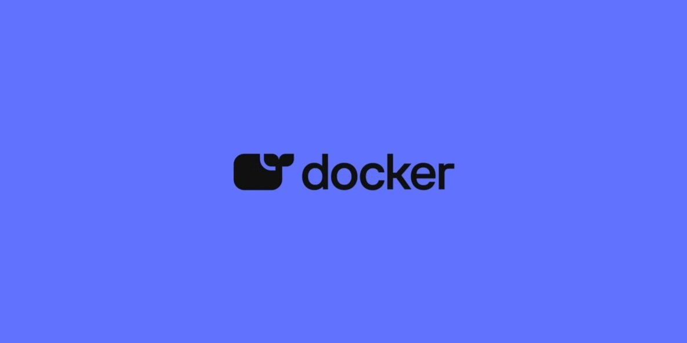

新闻 · 2026-11-24 08:00
Docker 徽标焕新，致力于打造面向智能体的安全容器化环境
Docker 于11月19日更新徽标，新版Moby鲸鱼更抽象简洁、以黑色为主色调。官方称新徽标旨在打造面向智能体时代的安全容器化环境，强调信任、隔离与治理，同时保留开放合作与开发者优先的传统。

来源与核验
单一信源报道，未交叉核实
Docker 于11月19日更新徽标，新版Moby鲸鱼更抽象简洁、以黑色为主色调。官方称新徽标旨在打造面向智能体时代的安全容器化环境，强调信任、隔离与治理，同时保留开放合作与开发者优先的传统。

单一信源报道，未交叉核实